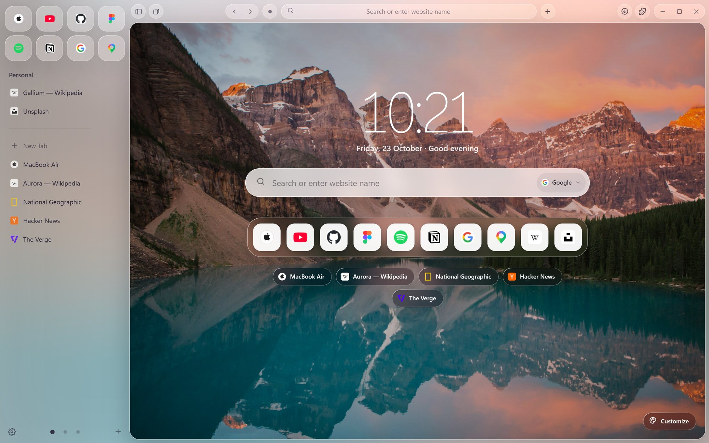
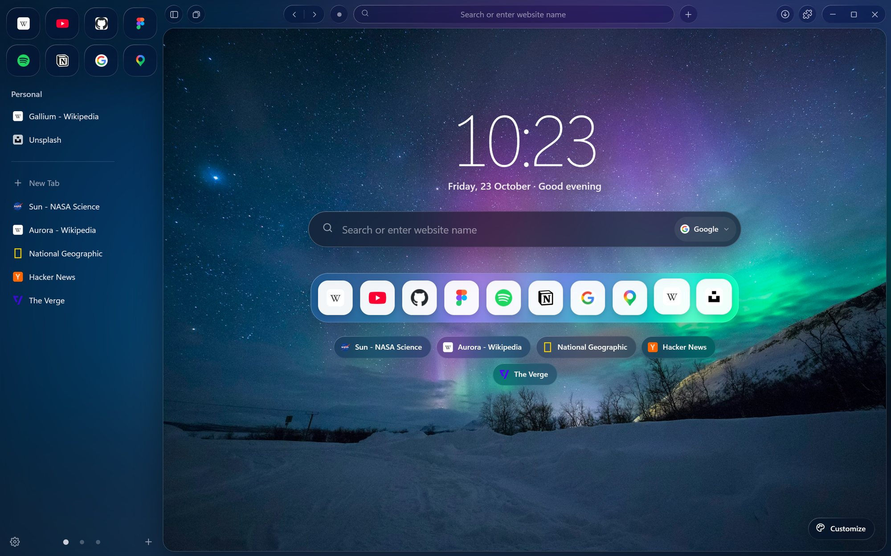
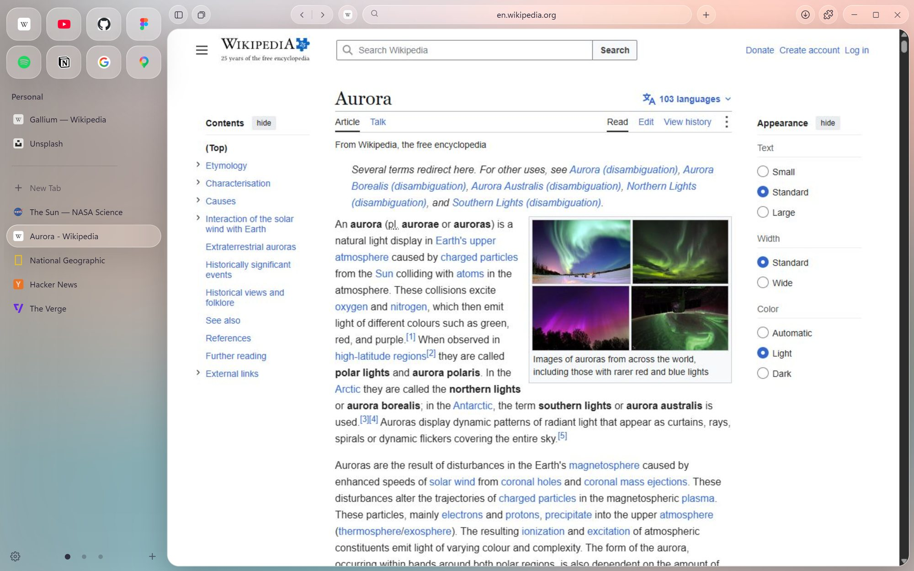
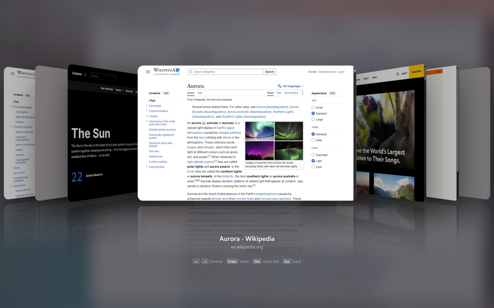
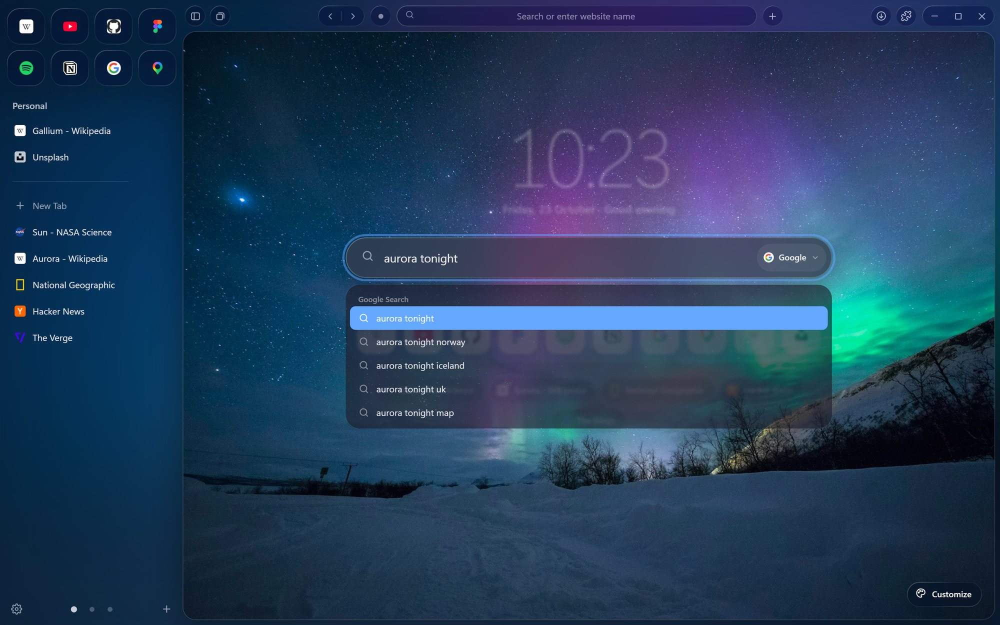
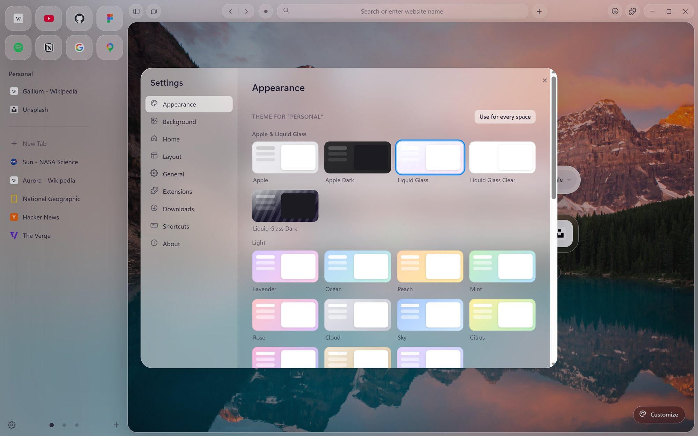
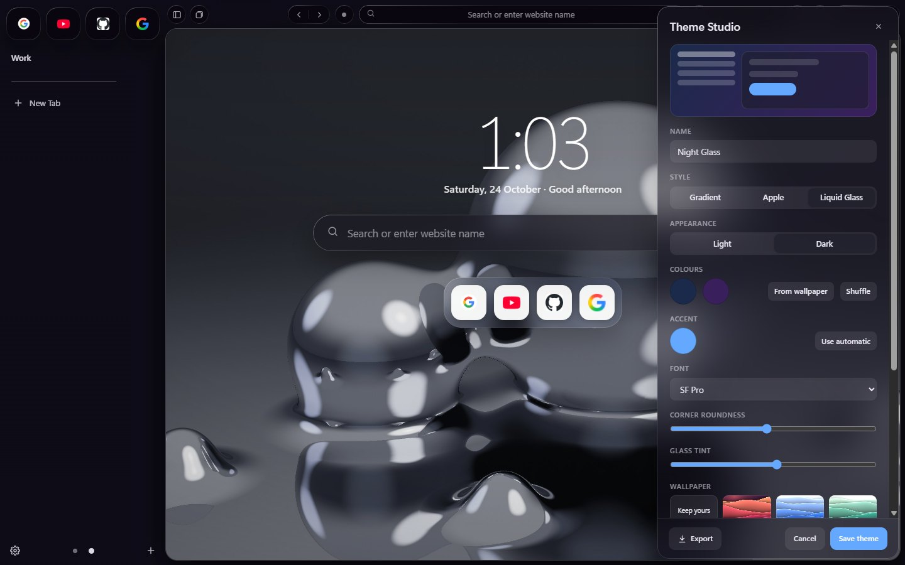
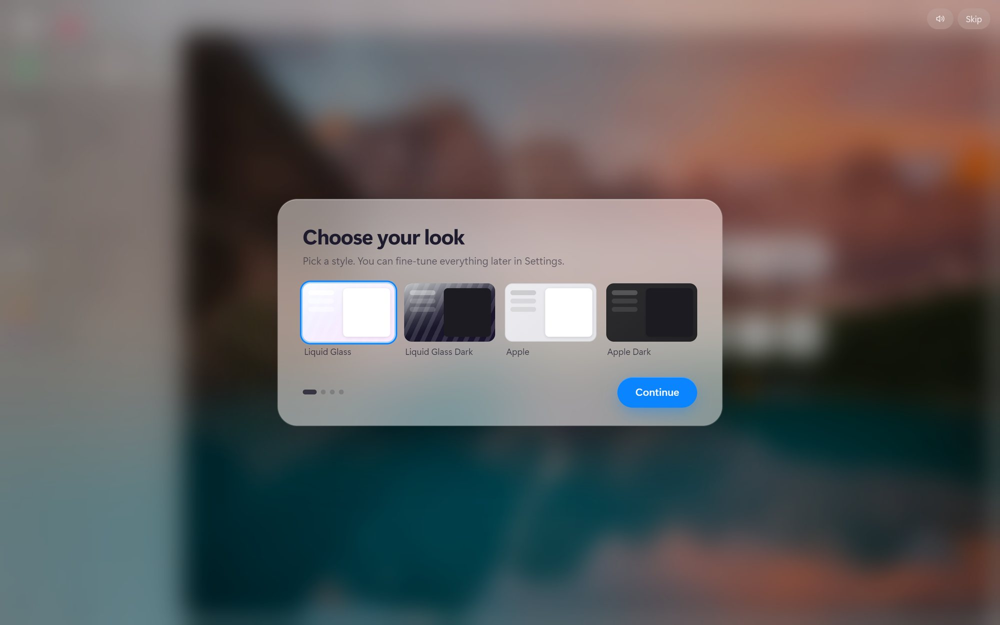
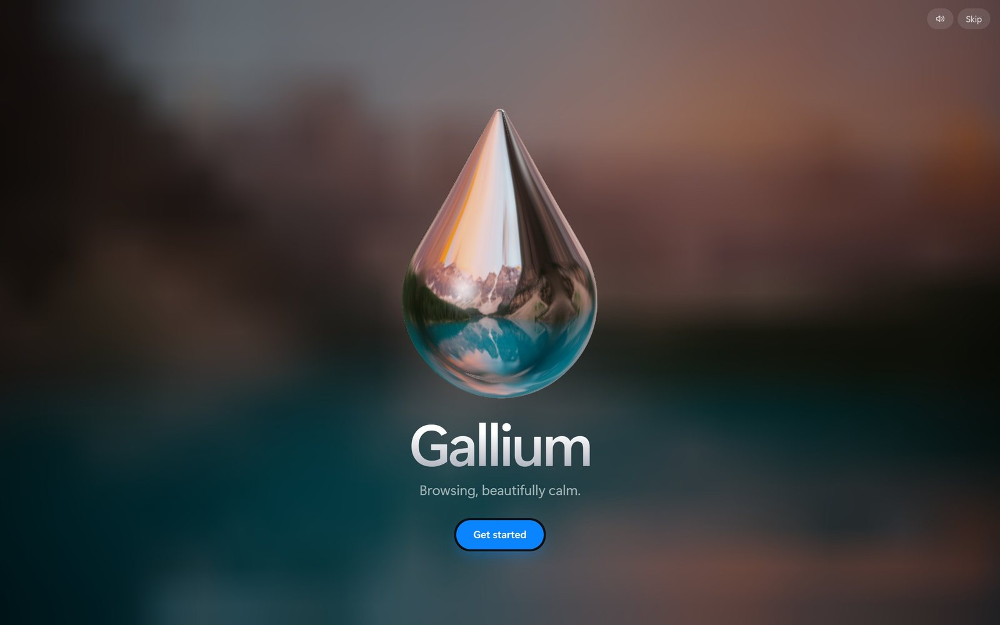
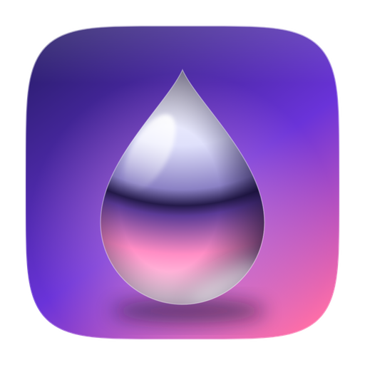

Press Kit
Clips, screenshots, logos and the facts, ready to drop into a video or an article. Use anything here freely when you write about Gallium.
Copy whichever length fits.
Gallium is a free, Arc-style browser for Windows, Mac and Linux, built to be calm and beautiful.
Gallium is a free browser that keeps your tabs in a tidy sidebar, splits your life into Spaces, and wraps it all in Liquid Glass. It opens with a liquid-metal intro drawn live in 3D, and you can restyle everything with the built-in Theme Studio or with themes and mods from a gallery where every file is virus-scanned.
Gallium is a free, open-source browser for Windows, Mac and Linux, inspired by Arc. Tabs live in a sidebar instead of a crowded strip, grouped into Spaces for work, home or anything else. The interface is made of Liquid Glass that bends the wallpaper behind it, the home screen has a lock-screen style clock, weather and quick links, and a 3D Tab Overview shows every open tab at once. The first launch plays a short liquid-metal intro, rendered live with sound made on the fly. Everything can be restyled: the Theme Studio builds a theme in minutes, and the online gallery shares themes and mods that are format-checked and virus-scanned before anyone can download them. There's no account and no tracking: tabs, Spaces and settings stay on your computer.
Silent screen recordings of the real app, 1080p. Drop them straight into your edit.
Full-size, straight from the app. Click to open the original.










GalliumA few angles people have liked.
Sidebar tabs, Spaces and a calm home screen, for people who loved Arc and want somewhere to land.
Liquid Glass, rendered wallpapers and a 3D intro. Put it next to Chrome and Edge and let viewers decide.
Liquid Glass, traffic-light buttons and the Theme Studio, for desktop-customisation videos.
Every upload is format-checked and virus-scanned before it's listed, and again inside the app before it installs.
Get in touch on GitHub. We'll happily make a Gallium theme in your channel's colours.